08/12/2012
Rio de Janeiro
Rio - die schönste Stadt der Welt, wie man sagt. Und tatsächlich ist da was dran. Denn eigentlich ist Rio eine ganze, kleine Welt für sich, mit Bergen und Meer und Stränden, Seen und Buchten, Hochhäusern, Autobahnen, Flughäfen, Seehäfen, Wald und sogar mit einer Seilbahn. Vom Zuckerhut aus oder vom gegenüber liegenden Cristo hat man einen fantastischen Blick über all das.
Aber fangen wir vorne an. Die Fahrt ging vom modrigen Flughafen ins schicke Ipanema über endlose Stadtautobahnen. Die Copacabana ist auch abends noch belebt und Ipanema der richtige Ort um samstags Abend nach Ess- und Trinkbarem zu suchen. Wir sind im Guesthouse "Bonita Ipanema" untergekommen, das die perfekte Lage zwischen Strand, U-Bahn und den Bars und Restaurants der Gegend hat.
Den ersten Caipirinha haben wir schnell gefunden und gestürzt, was man von den gigantischen Fleischportionen nicht behaupten kann. Kaum zu glauben, dass einer so einen Teller essen kann. Am Strand ist neben der brasilianischen Vorliebe für geringe Bekleidung schnell offensichtlich geworden, dass es doch einige gibt, die solche Teller aufessen.
Neben Bikinis und BBQ herrscht hier große Begeisterung für schlechte Tätowierungen und Sport. Zu jeder Tageszeit sieht man Jogger am Strand und auf den Straßen Ipanemas, die in der Hitze am baldigen Herzinfarkt arbeiten. Was wir zuerst für Bushaltestellen gehalten haben, hat sich als Klimmzuggerüste entpuppt, die überall herumstehen. Sehr schön ist auch das Krafttraining mit Hanteln aus Beton an der Spitze vom Ipanema Beach.


 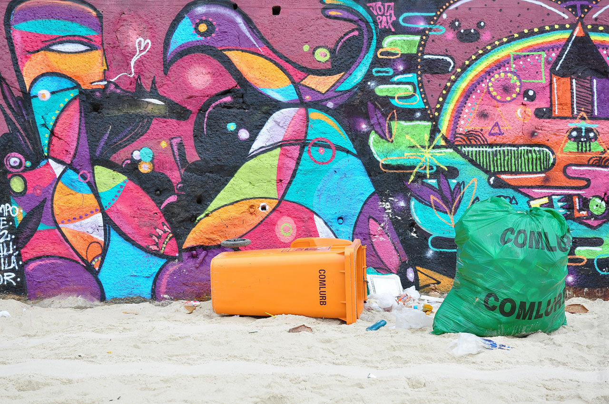
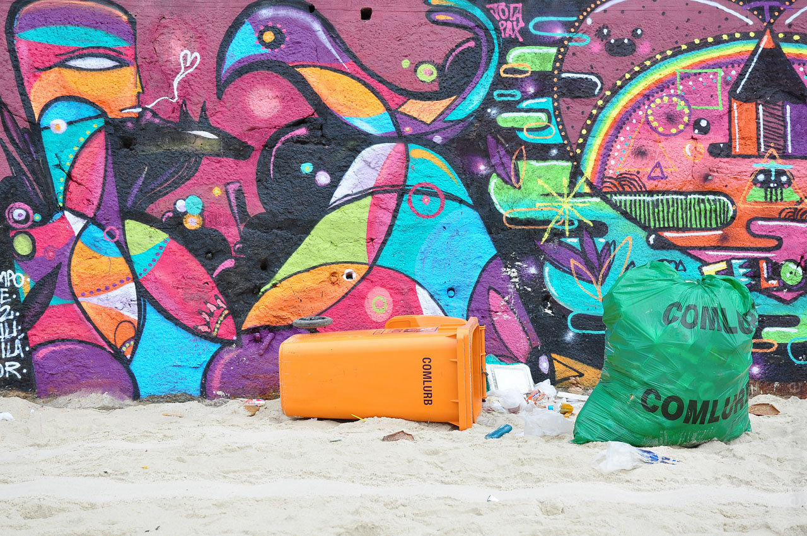
Unser sonntäglicher Ausflug ins "Centro" war weniger reizvoll. Hässliche Hochhäuser, ausgestorbene Straßen, Obdachlose und ein angeblich "quirliger" Straßenmarkt, auf dem wir die einzigen Kunden waren. Aber dennoch hat Rio hier eine besondere Überraschung zu bieten: Die Kathedrale! Eine Anti-Sehenswürdigkeit, die sich weltweit messen kann. Die Kirche sieht aus, als hätte man ein dutzend evangelischer Nachkriegskirchen abgerissen, um daraus einen Vulkan zu bauen. Wikipedia sagt, sie sei einer Maya-Pyramide nachempfunden, wobei ich einen Tempel mit Menschenopfern für etwas zu multi-kulti für ein Kirchenvorbild halte. Der düstere Innenraum mit seinen riesigen Buntglasfenstern wirkt nicht weniger gruselig. Die kath. Weltjugend, die sich 2013 nach Rio aufmacht, sei hiermit gewarnt. Das Museu de Arte Moderna ist vor allem als Zeitzeuge aus der Beton-Ära sehenswert.
 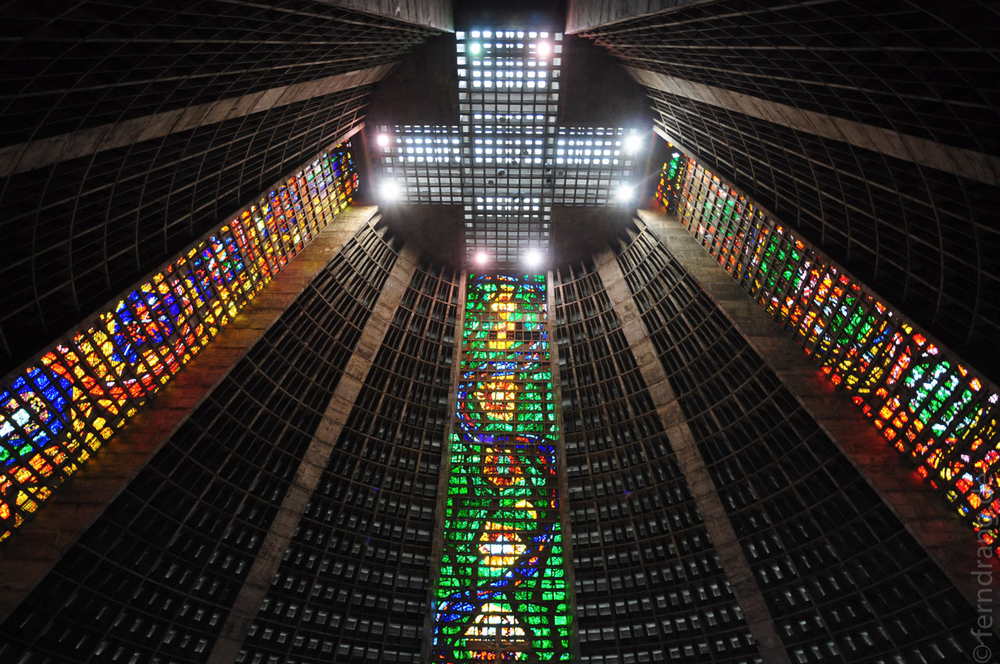
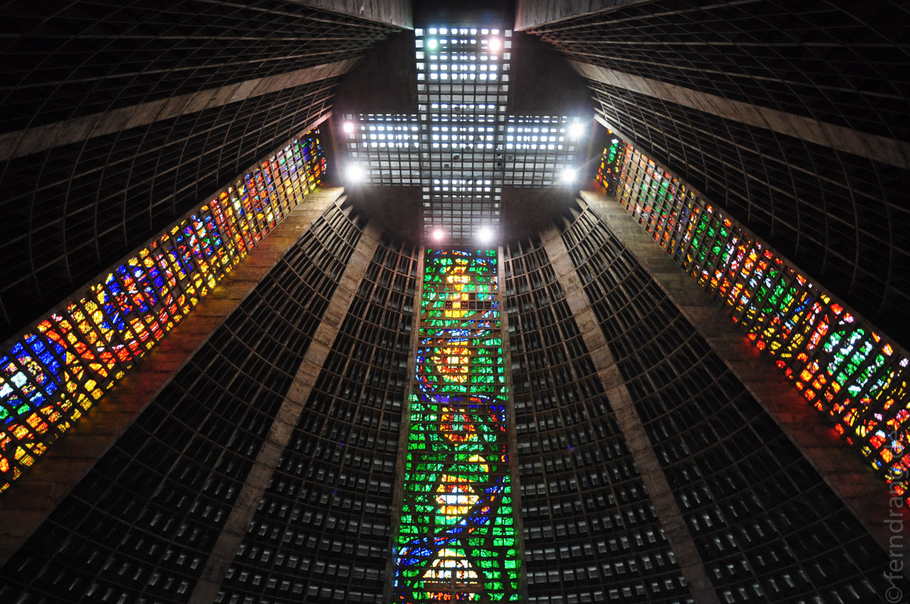
Wesentlich interessanter war der Ausflug nach Rocinha, der größten Favela von Rio. Sie liegt wie ein Flickenteppich in einem Tal hinter Leblon. Die Häuser sind fast organisch zusammengewachsen. Es gibt nur wenige Straßen, die sich den steilen Hang hoch schlängeln. Über eine sind wir mit durchgedrehten Mototaxis hoch geschossen. Unser Führer hat uns dann durch kleine Gassen und Treppen, die zwischen den Häusern frei geblieben sind, gelotst. Das Viertel ist seit einigen Jahren erfolgreich von der Polizei befriedet worden. Seitdem gibt es viele Anstrengungen, hier Infrastruktur von außen unterzubringen. Es gibt Supermärkte, Grundschulen, ärztl. Versorgung und einen Kinderhort. Für 120 tausend Einwohner aber von Allem zu wenig. Strom und Wasser werden irgendwo angezapft und der Rest selbst gebaut. Am Fuße des Viertels schließt sich eine der teuersten Gegenden Rios direkt am Strand an.
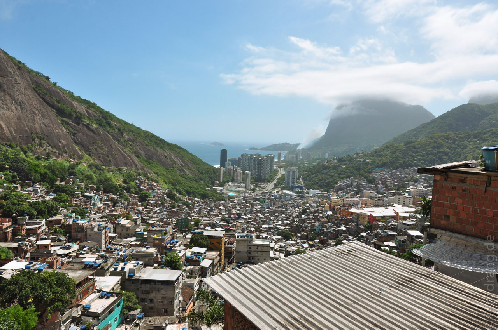 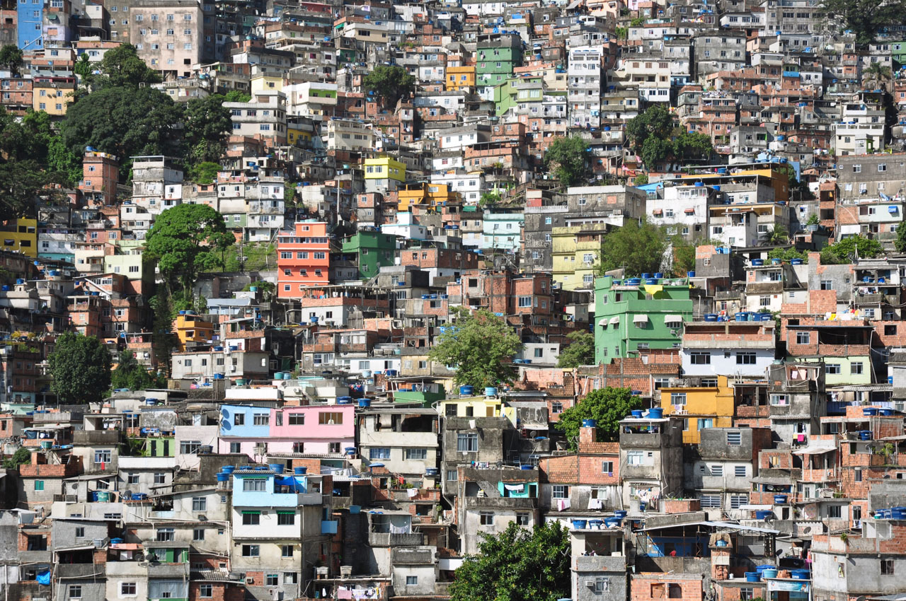
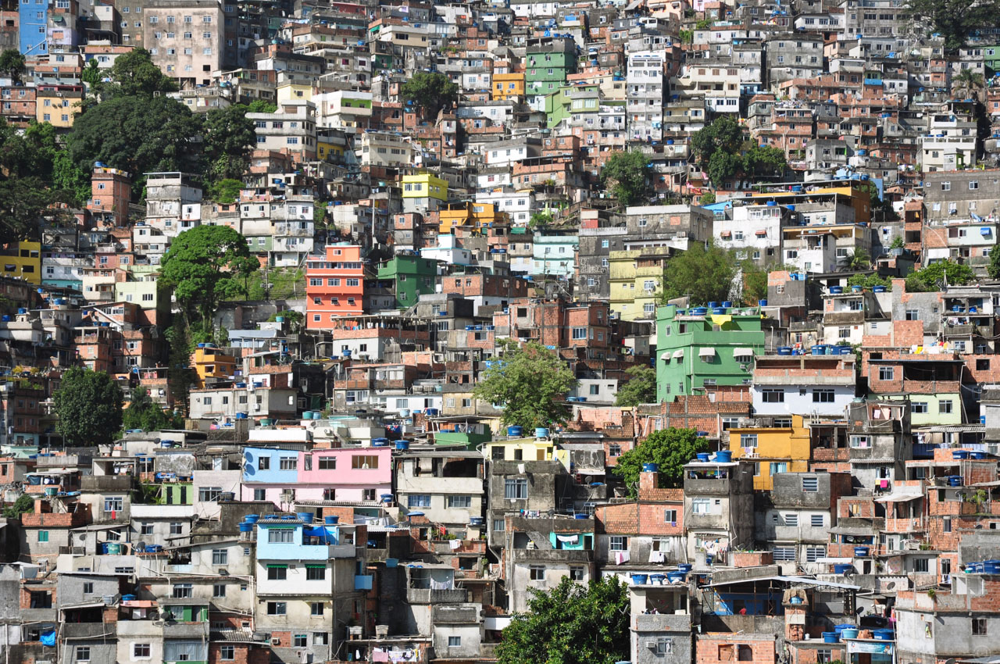
Mit einer netten Gruppe sind wir in einem alten VW-Bus zum Cristo Redentor gefahren. Die Straße schraubt sich durch alte, mediterrane Viertel bis in den Tijuca, Rios Urwald hinein. Der Blick auf die kleine Welt ist toll. Mit einem Abstecher durch Santa Teresa, einem ehemaligen Edel-Viertel aus den 30er Jahren, sind wir nach Lapa zu der berühmten Kacheltreppe gefahren.
 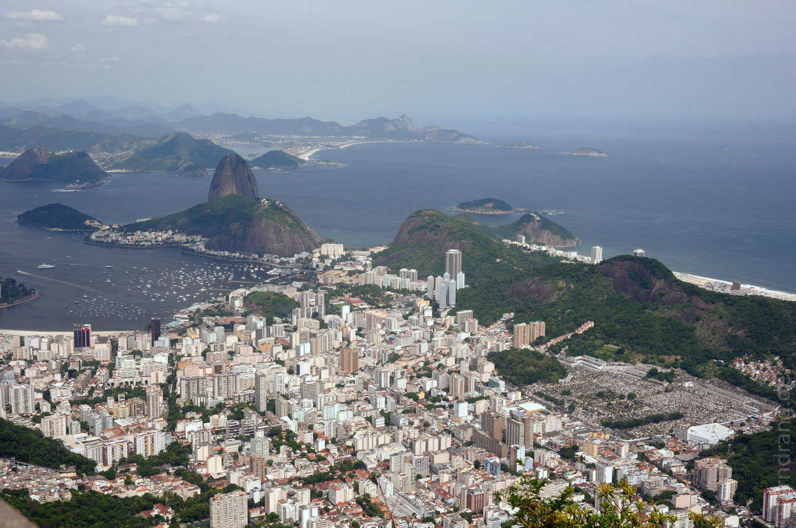
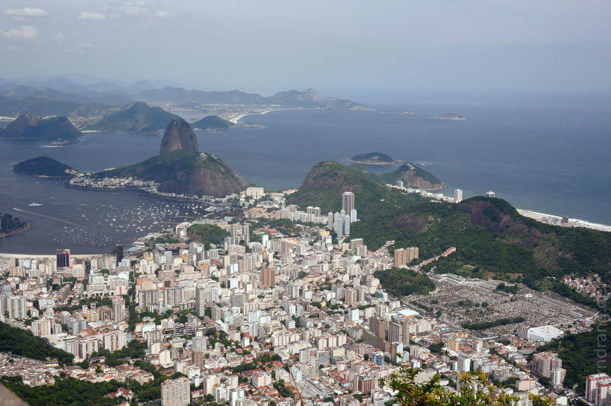
 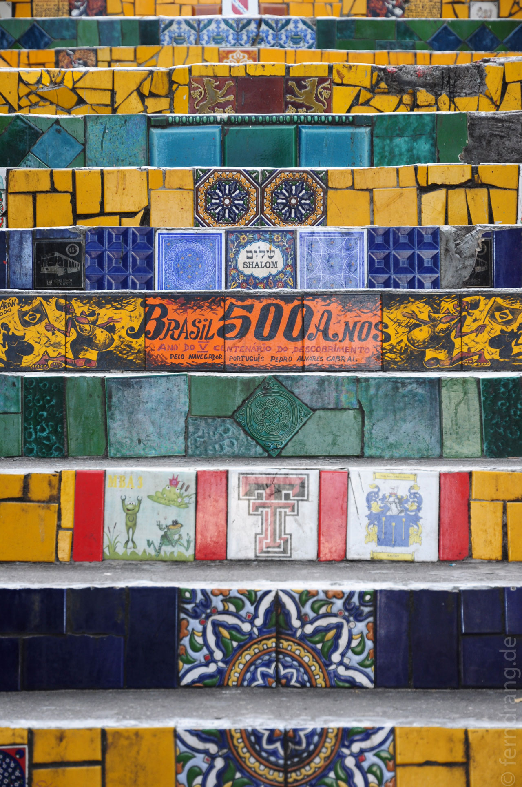
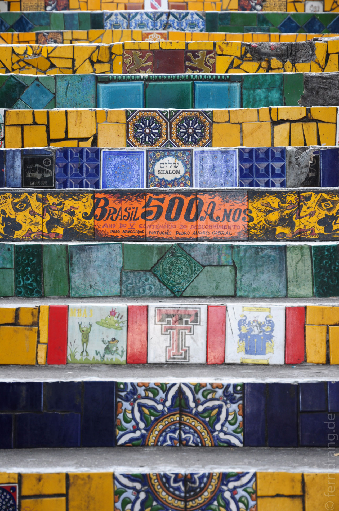
Das erste Stück auf den kleineren Hügel des Zuckerhuts kann man auch zu Fuß hoch wandern. Der Pfad führt durch ein tropisches Wäldchen, in dem man Äffchen sehen kann. Auf den Zuckerhut selbst kommt man nur mit der Seilbahn, die über einen gähnenden Abgrund führt. Der Sonnenuntergang hinter den Bergen Rios ist atemberaubend, wenn der Cristo angestrahlt wird, in der Stadt die Lichter angehen und man auf die landenden Flugzeuge in der Bucht herunter gucken kann.
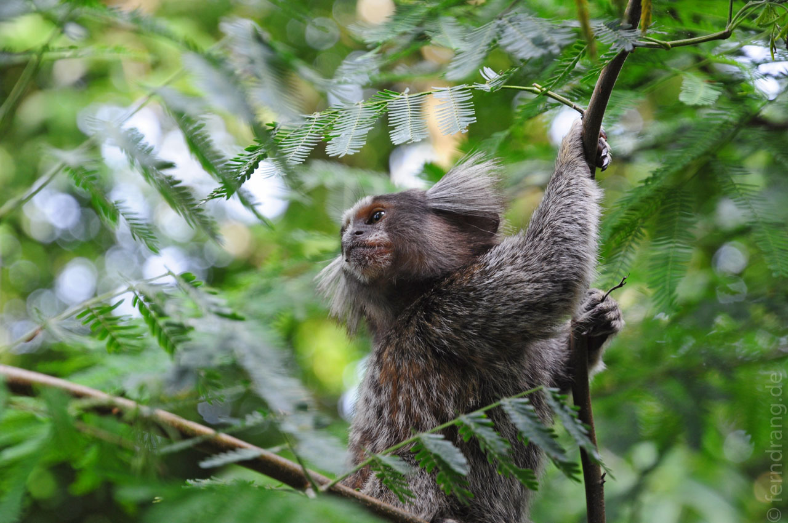 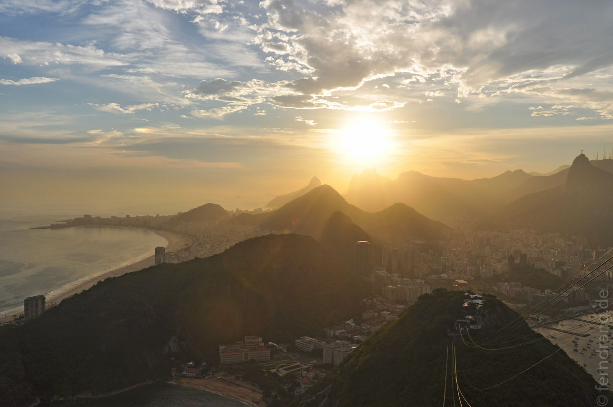Den Sonnenuntergang am Ipanema Beach darf man sich auch nicht entgehen lassen. Hier bleibt die Sonne am längsten und taucht die Surfer in gleißendes Licht. Der Wellengang ist hier oft zu stark zum Schwimmen, was die Heerscharen am Strand aber nicht von einer kurzen Abkühlung abhält.